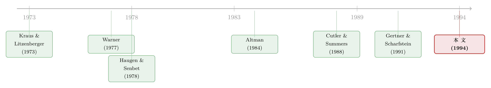

一纸诉状，凭空蒸发 2100 万——官司里被「财务困境」偷走的钱
本文读的是 Bhagat, Brickley & Coles (1994, Journal of Financial Economics)：当一桩公司间诉讼被《华尔街日报》披露时，被告股价平均下跌约 1%，而原告几乎一分钱也没赚到；一对当事公司的合计市值平均凭空蒸发 $20.91 百万——其中相当一部分，是这场官司给被告强加的「财务困境成本」吃掉的。这是第一篇用大样本来给「公司间诉讼的财富效应」称重的研究。
1 一桩官司，钱去哪儿了
先讲一个让经济学家很不舒服的事实。
1980 年代，得州一家叫 Pennzoil 的石油公司把 Texaco 告上法庭，索赔上百亿美元。官司一路打下来，Texaco 的市值蒸发了天文数字。可如果你去看 Pennzoil 这一边——它涨了吗？涨了，但远远不够。Cutler 和 Summers(1988) 算过一笔账：Texaco 每损失一美元，Pennzoil 只赚回 17 美分。
剩下那 83 美分呢？它没有从被告口袋转到原告口袋，而是干脆消失了。
这正是让人不安的地方。按照科斯定理 (Coase Theorem) 的逻辑，只要交易成本足够低，纠纷各方总能坐下来谈，把蛋糕分匀，不至于白白毁掉价值。换句话说，官司本该是一场零和的财富转移——你输的就是我赢的，加总起来应该接近于零。可 Pennzoil v. Texaco 的账对不上：一加一，少了一大块。
于是一个自然的问题是：这到底是 Texaco 一家的特例，还是公司间诉讼普遍如此？Cutler 和 Summers 自己也承认，他们手里只有这一个案子。一个案子，说明不了规律。
Bhagat、Brickley 和 Coles 这篇 1994 年的论文，做的就是把「一个案子」变成「一大批案子」。他们想回答两个层层递进的问题：第一，当公司间的官司被公之于众，市场到底怎样给当事双方重新定价？第二，如果那块「消失的钱」真的存在，它究竟去了哪里——尤其是，它有多少能归因于一个在资本结构理论里被反复念叨、却始终缺乏实证证据的东西：财务困境成本 (costs of financial distress)。
2 为什么偏偏要看官司
要理解这篇文章的巧思，得先把一个常被混为一谈的区分讲清楚。
公司陷入麻烦，有两种完全不同的麻烦。一种叫 经济困境 (economic distress)：生意本身做坏了，产品没人买、成本降不下来，清算反而是更优的选择。另一种叫 财务困境 (financial distress)：生意本身没问题，但资本结构里的杠杆太重，现金流一时盖不住固定的偿债义务（比如利息），于是开始还不上钱（参见 Wruck 1990 对这两者的经典界定）。
财务困境成本，指的不是破产时付给律师会计的那点直接费用——Warner(1977) 早就量过，那点钱小得可怜。真正要命的是间接成本：客户不敢再下单、供应商收紧商业信用、银行不肯续贷、管理层心思全被牵走、投资决策开始扭曲。Altman(1984)、Hoshi、Kashyap 和 Scharfstein(1990) 的证据都指向这些间接成本相当可观。
但问题来了——这些间接成本几乎没法干净地测量。因为现实里，财务困境和经济困境总是结伴而来。一家快还不上债的公司，往往本身生意也在走下坡路；你看到它客户流失、信用收紧，根本分不清这是杠杆惹的祸，还是生意本来就烂。Gertner 和 Scharfstein(1991) 点破了这个死结。
而这，就是官司的妙处所在。
一桩只索要金钱赔偿的诉讼，对被告而言是一笔表外负债 (off-balance-sheet liability)：它凭空给公司挂上了一笔或有的偿付义务，却【没有】直接改变公司资产的价值、也没有动摇它的生意。换句话说，官司能把一家公司推进财务困境，却不把它推进经济困境。
这正是经济学家梦寐以求的那种「干净」的外生冲击。在高效率的讨价还价下，被告的经营决策本不该因为挨了一纸诉状就改变，当事各方坐下来谈，就能把财富的漏损 (wealth leakage) 摁住。所以——如果我们仍然观察到价值凭空蒸发，那这块漏损就很难再用「生意变坏了」来搪塞，它更可能是财务困境本身的代价。
把官司当成一台分离器，把「财务」从「经济」里剥出来。整篇文章的力量，都建在这一个念头上。
3 样本与识别
接着，怎么把这个念头落到数据上。
作者逐行翻检了 1981—1983 三年的《华尔街日报索引》(WSJ Index)，把每一桩涉及 CRSP 日收益文件 (CRSP Daily Returns File) 上市公司的、首次被报道的公司间诉讼立案 (filing) 或和解 (settlement) 记录下来。之所以死磕《华尔街日报》而不用 8-K 之类的其他来源，是因为只有这样才能相对精确地锚定市场第一次得知消息的那一天——事件研究 (event study) 的全部精度，都系于这个日期定得准不准。
最终样本：330 家公司，合计进入样本 550 次（一家公司每当一次原告或被告就计一次）。其中 445 次是立案，剩下是和解。诉讼涉及的议题五花八门，最常见的是公司控制权、违约、专利侵权和反垄断。
顺带破除一个流行印象：人们总以为是「小公司告大公司」。可在这个样本里，被告股权市值平均 $4.26 十亿，原告 $3.96 十亿，统计上根本拒绝不了「两边一样大」的原假设（t = 0.34，p = 0.74）。原告并不是想象中以小博大的那一方。
方法上是标准的市场模型事件研究：用日 −171 到日 −22 这 150 天估市场模型参数，再算 日 −1 和日 0（日 0 即《华尔街日报》见报日）这个两天窗口的 累积异常收益 (cumulative abnormal return, CAR)。正式的统计检验用 标准化预测误差 (standardized prediction errors, SPE)，因为它更接近同方差。整套程序的细节，作者直接把读者指向 Dodd 和 Warner(1983)。
对配对的当事公司，作者还算了一个组合收益：以两家公司在事件前一财年末的市值占比为权重，把原告和被告的收益加权合成一个「组合」。这个组合的 CAR，就是衡量「这场官司到底净毁了多少钱」的尺子。
4 主要结果：原告没赚到，被告在流血
现在揭晓那块对不上的账。
立案时。 配对组合的合计市值，在立案公告日平均下跌 1.04%，统计上高度显著（Z = −3.56，p = 0.00）。换算成美元，一对当事公司平均合计蒸发 $20.91 百万——大约 2100 万美元，凭空消失。
把这块漏损拆开看，故事更清楚：
- 被告：平均 CAR 为
−0.92%（全样本）和−1.00%（剔除其他新闻的「无新闻」子样本），Z 值分别是 −4.18 和 −2.59，都在常规水平上显著。被告确确实实在流血。 - 原告：平均 CAR 为
−0.18%和+0.31%，统计上与零无异。正收益的比例（48.0% 和 54.2%）也和「掷硬币」没区别。
这就是核心的不对称：原告确实能、也确实在通过诉讼伤害被告，但原告赚到的，远远少于被告失去的。这和 Pennzoil v. Texaco 里「17 美分」的直觉完全吻合，只不过现在它站在了 445 桩官司之上，而不是孤零零一个案子。这也和 Engelmann 和 Cornell(1988) 形成对照——后者只有 5 个案子，没能测出显著的立案效应，作者认为那多半是样本太小的缘故。
原告的「零反应」该怎么读？作者给了两种解释。一是立案带来的正面重估（赢了官司或拿到和解的好处），恰好被预期的诉讼成本抵消了。二是立案这个动作本身也泄露了坏消息——它等于公开承认「原告确实已经受了损」。一正一负，平均下来归零。
和解时。 如果说立案是漏水，和解就是把水接回来一大半。被告在和解公告日平均 CAR 为 +1.65%（全样本）和 +2.98%（无新闻子样本），Z = 2.93 和 2.63，显著为正。立案时跌掉的，和解时大体涨了回来。
这一来一回，把整个逻辑钉死了：官司的开打代表当事双方议价的一次显著破裂，而和解则是裂痕的弥合。科斯定理所许诺的、那种「无摩擦下总能达成的高效率结局」，在现实的公司诉讼里并不总能实现。
5 那块漏损，到底是不是财务困境
到这里，文章只证明了「钱确实消失了」。但真正关键的一步，是把这块消失的钱和财务困境直接挂上钩。
作者的做法是横截面回归：用每家被告的财务困境程度，去解释它在立案时的 CAR。困境程度怎么度量？他们构造了几个代理变量，核心思路是——一旦官司败诉、要掏出那笔赔偿，被告的破产概率会上升多少，再乘上诸如「股权市值／账面价值」「R&D 支出／总资产」这类反映困境一旦发生、损失会有多惨的乘子。
逻辑链条是这样的。给定一桩官司，财务困境对被告市场收益的冲击，可以写成困境代理变量的回归系数乘以该公司的代理取值：
$$ \text{FD impact}_i = \hat{\beta}_{FD} \times \text{proxy}_i $$
把它除以该公司的 CAR，就得到「总财富效应里，有多大比例可归因于财务困境」：
$$ \text{share}_i = \frac{\hat{\beta}_{FD} \times \text{proxy}_i}{\text{CAR}_i} $$
而要换算成纯美元金额，再乘上股权市值即可：
$$ \text{FD cost}_i = \hat{\beta}_{FD} \times \text{proxy}_i \times (\text{market value of equity})_i $$
结果是这样的：
- 用主回归（eq. 1）算，在均值处，财务困境占了被告全部财富效应的约
27%。其他设定给出的比例从约 4% 到更高不等。 - 折成美元，被告平均的财务困境成本在不同方程间差异很大，从约
$45,000到$6.7百万，中位数约$1.5百万。 - 更进一步，配对组合的收益与被告财务困境的代理变量显著负相关：六个相关系数从 −0.97 到 −0.66，p 值全是 0.00。被告越是显得财务脆弱，这一对公司合起来亏得越多。
那对面呢？一个最该问的问题是：被告增加的财务困境成本，是不是被原告减少的困境成本对冲掉了？ 如果是，那就只是财富在两家之间搬家，社会总量不变。作者把同一套回归在原告身上重做一遍（对应原告的「困境缓解」代理），结果——破产相关的变量在所有回归里都不显著。组合收益也和原告的困境缓解代理无关。
于是反转出现了：在一场官司里，被告的财务困境是股东财富净漏损的一个来源，而不是一次零和的转移。被告这边多出来的成本，并没有在原告那边对称地省回来。这正是「财务困境成本真实存在且可观」的硬证据。
作者很克制地排查了其他几种竞争性解释，并诚实承认数据限制让他们没法逐一深究。两个被正面检验的：税收漏损——把赔偿带来的联合税负变化算出来（均值 +$14 百万），它与组合收益的相关系数仅 −0.10（p = 0.65），不显著；跟风诉讼 (follow-on suits)——反垄断官司常被认为会招来后续模仿者，但样本里只有 5.5% 是跟风suit，加入反垄断哑变量对收益没有额外解释力。两条路都堵上了，财务困境的解释才站得更稳。
6 文献脉络
把这篇文章放回它所在的那条线里，会看得更清楚。
故事的源头是资本结构理论对破产成本的争论。Kraus 和 Litzenberger(1973)、Scott(1976)、Kim(1978) 这一脉认为，公司之所以用大量股权、不把杠杆加满，正是因为负债带来的潜在破产成本很高。可紧接着，基于科斯定理的一派——以 Haugen 和 Senbet(1978) 为代表——反驳说：只要议价成本足够小，股东和债权人会在产生大额死成本之前就非正式重组，所以财务困境成本必然是微不足道的。另一派则坚持，搭便车、信息不对称这些摩擦会让高效率结局落空（Gertner 和 Scharfstein 1991）。

争了几十年，症结始终是测不准。直接破产成本被 Warner(1977) 测出来很小；间接成本被 Altman(1984)、Hoshi 等(1990) 估得很大，但谁也没法把它从经济困境里干净地剥离。直到 Cutler 和 Summers(1988) 用 Pennzoil v. Texaco 给出了第一束光：用一桩纯金钱索赔的官司，把财务困境单独拎出来——可惜只有一个案子。Engelmann 和 Cornell(1988) 想做多一点，也只攒到 5 个。
Bhagat、Brickley 和 Coles(1994) 的位置，就是把 Cutler-Summers 的那束光，扩成 445 桩官司的大样本，第一次给「公司间诉讼的财富效应」立了一条基准线，也第一次用横截面证据，把那块漏损与财务困境直接钉在了一起。
这条「用诉讼当显微镜照公司价值」的思路，后来还在延续。比如有人干脆把一场官司切下来单独挂牌，让一只证券去替市场给诉讼定价（参见《一场官司，被「切」下来单独挂牌》）；也有人反过来问，公司打赢官司、白得一笔横财之后，这笔钱会怎么花（参见《打赢一场官司，白得一笔钱——公司会怎么花？》）。而「债务作为谈判筹码、财务困境写进议价桌」这条更大的暗线，则一路通向了把财务市场与劳动谈判连起来的研究（参见《债，竟成了老板谈判桌上的底牌》）。
7 评论与延伸（Q&A + 研究方向）
(a) 几个可能的疑问
Q：被告跌 1%，听上去很小，凭什么说它「重要」？
关键不在绝对幅度，而在两点。其一是不对称：被告显著为负、原告却为零，加总后净漏损
$20.91百万，这本身就推翻了「官司是零和转移」的科斯式直觉。其二是外推：作者反复强调，诉讼只是公司索取权人之间议价的一个相对温和的场景；如果连这点小冲突都能凭空毁掉 1% 的市值，那么破产、债务重组这类高得多的议价场合，财务困境成本只会更大。1% 是地板，不是天花板。
Q：怎么确定漏损是「财务困境」，而不是官司泄露了关于公司基本面的坏消息（经济困境）？
这正是「只看纯金钱索赔的诉讼」这一设计的用意——它给被告挂上一笔表外负债，却不直接改变其资产价值或生意。再加上横截面证据：被告越财务脆弱，亏得越多，而这个相关性是建立在「败诉会让破产概率上升多少」这个与杠杆直接相关的代理上的。当然，识别不是密不透风的（见下条）。
Q：那个「财务困境占 27%」的数，可信吗？
要诚实地打个折扣。它高度依赖困境代理变量的构造，不同方程给出的比例从约 4% 到 27% 不等，美元估计更是从 $4.5 万跨到 $670 万。所以更稳健的读法不是「精确的 27%」，而是「财务困境是一个统计上显著且经济上非零的来源」，而原告那边对称的缓解效应测不出来——后面这个不对称，比那个点估计本身更有说服力。
Q：为什么原告一点都没涨？告赢了不该高兴吗？
立案≠告赢。立案时市场只是在重估「未来的和解/判决」的预期价值，同时要扣掉预期诉讼成本；而且立案本身泄露了「原告确已受损」这个坏消息。两股力量抵消，平均归零。证据是：真到和解时，被告显著回涨 1.65%—2.98%，说明此前的漏损里确有一部分是可逆的困境成本。
Q：会不会是反垄断官司的「跟风诉讼」或税收在捣鬼？
作者都查了。税负变化与组合收益相关系数仅 −0.10（不显著）；样本里跟风suit只占 5.5%，反垄断哑变量对收益没有额外解释力。这两个最常见的替代解释都没站住，财务困境的解释因此更干净。
Q：1981—1983 三年、330 家 NYSE/AMEX 公司，结论能外推到今天吗？
这是这类老事件研究共同的软肋。样本只覆盖了被《华尔街日报》报道的、上市的大公司，时间也短。诉讼的法律环境、和解惯例、信息传播速度，过去四十年都变了。把它当成「财富效应存在与方向」的基准线很稳，但具体量级未必能照搬到当下。
(b) 几个可能的研究问题与提案
1. 把这台「诉讼显微镜」对准公司债与 CDS。 - 【经济故事】本文只看了股权。可财务困境成本理论上是由债权人和股东共同承担的，立案这笔表外负债首当其冲冲击的恰恰是信用风险。如果财务困境真的被官司放大，那么被告的信用利差、CDS 利差应当在立案日跳升、和解日回落，且跳幅与被告杠杆正相关。 - 【可行性】高。用 TRACE 的公司债成交、Markit 的 CDS，配合诉讼数据库（如 Audit Analytics 的诉讼模块），做债券层面的事件研究完全 doable，而且能直接回答「漏损在股债之间如何分摊」这个本文留白的问题。
2. 外资持有人是不是被告财务困境的放大器？ - 【经济故事】间接困境成本的核心是「客户、供应商、债权人因为担心你撑不住而抽身」。如果被告的股东结构里外资占比高，而外资在坏消息下更容易「赖不住就跑」，那么同样一桩官司，外资持股高的被告漏损是否更大？这把诉讼冲击和持有人结构脆弱性接在了一起。 - 【可行性】中。需要 FactSet/Thomson 的机构与外资持股数据匹配到诉讼样本，识别上要小心外资持股本身的内生性（好公司更招外资），可考虑用指数纳入这类准外生的持股变动做工具。
3. 流动性渠道：官司会不会先「冻」住被告的股票？ - 【经济故事】财务困境的一个被忽略的间接成本是市场流动性恶化——不确定性骤升，做市商收窄深度、拉宽价差。立案日被告的买卖价差、价格冲击是否显著走阔，并在和解日收敛？这能给「困境成本」补上一个微观结构的注脚。 - 【可行性】高。日内 TAQ 数据加诉讼事件日，测 Amihud 非流动性或有效价差的事件窗口变化，方法成熟，关键是把「信息流入导致的暂时性价差走阔」和「困境导致的持续性流动性恶化」区分开。
4. 用机器读诉状，给「索赔金额／公司能不能扛」打分。 - 【经济故事】本文的困境代理是粗糙的财务比率乘子。如果用 NLP 从诉状文本里抽出索赔规模、议题严重性、是否纯金钱索赔，再与被告现金流缓冲对照，能构造出更细的「这笔或有负债相对于被告承受力有多重」的连续度量，从而把财务困境成本估得更准。 - 【可行性】中。诉讼文本（PACER/Westlaw）可得但清洗成本高，纯金钱 vs. 结构性救济的分类需要人工标注训练集；识别上的好处是能在同一被告内、跨不同官司比较，逼近固定效应设计。
参考文献
- Altman, E. I. (1984). A Further Empirical Investigation of the Bankruptcy Cost Question. Journal of Finance 39(4), 1067–1089.
- Bhagat, S., Brickley, J. A., & Coles, J. L. (1994). The Costs of Inefficient Bargaining and Financial Distress: Evidence from Corporate Lawsuits. Journal of Financial Economics 35(2), 221–247.
- Cutler, D. M., & Summers, L. H. (1988). The Costs of Conflict Resolution and Financial Distress: Evidence from the Texaco-Pennzoil Litigation. RAND Journal of Economics 19(2), 157–172.
- Dodd, P., & Warner, J. B. (1983). On Corporate Governance: A Study of Proxy Contests. Journal of Financial Economics 11(1–4), 401–438.
- Engelmann, K., & Cornell, B. (1988). Measuring the Cost of Corporate Litigation: Five Case Studies. Journal of Legal Studies 17(2), 377–399.
- Gertner, R., & Scharfstein, D. (1991). A Theory of Workouts and the Effects of Reorganization Law. Journal of Finance 46(4), 1189–1222.
- Haugen, R. A., & Senbet, L. W. (1978). The Insignificance of Bankruptcy Costs to the Theory of Optimal Capital Structure. Journal of Finance 33(2), 383–393.
- Hoshi, T., Kashyap, A., & Scharfstein, D. (1990). The Role of Banks in Reducing the Costs of Financial Distress in Japan. Journal of Financial Economics 27(1), 67–88.
- Kraus, A., & Litzenberger, R. H. (1973). A State-Preference Model of Optimal Financial Leverage. Journal of Finance 28(4), 911–922.
- Warner, J. B. (1977). Bankruptcy Costs: Some Evidence. Journal of Finance 32(2), 337–347.
- Wruck, K. H. (1990). Financial Distress, Reorganization, and Organizational Efficiency. Journal of Financial Economics 27(2), 419–444.